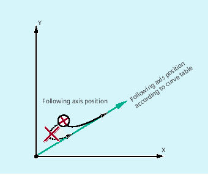
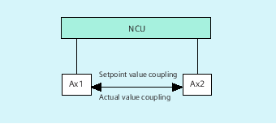
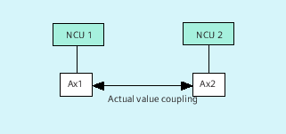

Master value coupling requires synchronization of the leading and the following axes. This synchronization can only be achieved if the following axis is inside the tolerance range of the curve definition calculated from the curve table when the master value coupling is activated.
The tolerance range for the position of the following axis is defined via machine data MD37200 $MA_COUPLE_POS_POL_COARSE A_LEAD_TYPE.
If the following axis is not yet at the correct position when the master value coupling is activated, the synchronization run is automatically initiated as soon as the position setpoint value calculated for the following axis is approximately the real following axis position. During the synchronization procedure the following axis is traversed in the direction that is defined by the setpoint speed of the following axis (calculated from master spindle and using the CTAB curve table).
If the following axis position calculated moves away from the current following axis position when the master value coupling is activated, it is not possible to establish synchronization.
Setpoint coupling provides better synchronization of the leading and following axis than actual value coupling and is therefore set by default.
Setpoint coupling is only possible if the leading and following axis are interpolated by the same NCU. With an external leading axis, the following axis can only be coupled to the leading axis via the actual values.
A switchover can be programmed via setting data $SA_LEAD_TYPE.
You must always switch between the actual-value and setpoint coupling when the following axis stops. It is only possible to resynchronize after switchover when the axis is motionless.
You cannot read the actual values without error during large machine vibrations. If you use master value coupling in press transfer, it might be necessary to switchover from actual-value coupling to setpoint coupling in the work steps with the greatest vibrations.
Master value simulation with setpoint coupling
Via machine data, you can disconnect the interpolator for the leading axis from the servo. In this way you can generate setpoints for setpoint coupling without actually moving the leading axis.
Master values generated from a setpoint link can be read from the following variables so that they can be used, for example, in synchronized actions:
- $AA_LEAD_P | Master value position |
- $AA_LEAD_V | Master value velocity |
As an option, master values can be generated with other self-programmed methods. The master values generated in this way are written to and read from variables
- $AA_LEAD_SP | Master value position |
- $AA_LEAD_SV | Master value velocity |
Before you use these variables, the setting data $SA_LEAD_TYPE = 2 must be set.
You can query the status of the coupling in the NC program with the following system variable:
$AA_COUP_ACT[<Ax>]
0: No coupling active
16: Master value coupling active
Switching and coupling events are managed via real-time variables:
$AC_MARKER[<i>]=<n>
managed with:
<i> = marker number
<n> = status value